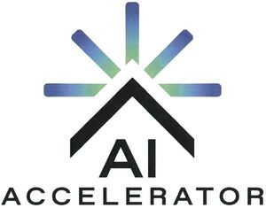

Trade Mark Journal No.2025/020 16 May 2025
WO0000001838816 (9,35,36,37,42)
Office of origin: Germany
Date of International Registration:7 August 2024
Date of designation in the UK:
7 August 2024

The mark contains the colours dark blue, green-blue, green, black.
International priority date claimed: 6 June 2024
(Germany)
- Class 9
- Information technology equipment for the operation of data centers, for cryptographic applications, for the calculation of cryptographic keys for receiving and spending cryptocurrency and other crypto assets, for the operation of cloud computing networks and for the provision of cloud computing services, including for the training of artificial intelligence applications, including large language models; data processing apparatus with artificial intelligence; communications apparatus with artificial intelligence; computer hardware for quantum cryptography systems; downloadable cryptographic keys for receiving and spending of cryptocurrency and other crypto assets; downloadable software for generating cryptographic keys for receiving and spending of cryptocurrency and other crypto assets; scientific research and laboratory apparatus, educational apparatus and simulators; apparatus, instruments and cables for electricity; audio-visual, multimedia and photographic devices; magnets, magnetizers and demagnetizers; measuring, detecting, monitoring devices, controllers and equipment, controlling devices; scientific and laboratory devices for treatment using electricity.
- Class 35
- Business management and organization consultancy; business organization consultancy.
- Class 36
- Electronic transfer of virtual currencies incorporating cryptographic protocols used to operate on a computer platform in the field of blockchain technology; issuance of prepaid cards and tokens of value; safe deposit services; financial and monetary services, and banking; fundraising and financial sponsorship; real estate services.
- Class 37
- Construction services; building construction and assembly [installation] of the process engineering systems relating to electrical engineering, supply technology, environmental control, automation and media supply; building construction and assembly [installation] of equipment relating to data centers; HVAC (heating-, ventilation- and air conditioning) installation, maintenance and repair.
- Class 42
- IT services for the operation of data centers, for cryptographic applications, for the calculation of cryptographic keys for the receiving and spending of cryptocurrency and other crypto assets, for the operation of cloud computing networks and for the provision of cloud computing services, including for the creation, building and operation of software applications for machine learning (artificial intelligence), including large language models; design services; technical planning for the construction of building and process engineering installations for building technology, electrical engineering, supply technology, environmental control, automation and media supply; technical planning of building and process engineering installations; industrial analysis and research services relating to building heating, ventilation and air conditioning systems; hosting services, including cloud hosting services, except website-, e-mail-and DNS-hosting services; hosting of servers [colocation services], including the provision of computer capacities and connection options for data processing devices; hosting of servers and software as access control as a service [ACaaS]; software as a service [SaaS]; platform as a service [PaaS]; internet of things [IoT] services, namely computer software design and development, infrastructure as a service [IaaS], hardware development, design of computer firmware, hardware and computer systems, design services for data processors, development of hardware for storing and retrieving multimedia data; distributed ledgers [DL] services, namely updating and maintenance of computer software, updating software for embedded devices, infrastructure as a service [IaaS], computer system analysis and design; services in the field of artificial intelligence and machine learning [AI/ML], namely research in the field of artificial intelligence, consultancy in the field of artificial intelligence, technology consultancy in the field of artificial intelligence, provision of computer programs for artificial intelligence in data networks, platforms for artificial intelligence as software as a service [SaaS], software as a service [SaaS] with software for machine learning, deep learning and deep neural networks, infrastructure as a service [IaaS]; providing temporary use of non-downloadable cloud computing web service software and cloud computing operating systems for managing, monitoring, tracking and organizing data; providing virtual computer systems through cloud computing; technological consultancy; computer technology consultancy; technological consultancy in the field of cryptocurrency; engineering services in the field of cryptocurrency; providing online non-downloadable software for generating cryptographic keys for receiving and spending cryptocurrency, blockchain tokens and other crypto assets; research in the field of information technology processing of natural language and training of large language models; rental of data center equipment; technical design and planning of data centers; rental of computer equipment; rental of data processing equipment; rental of storage space on servers; rental of high-performance and quantum computers.
Northern Data AG
Representative: Gleiss Lutz Hootz Hirsch PartmbB, Karl-Scharnagl-Ring 6, 80539 München, GERMANY